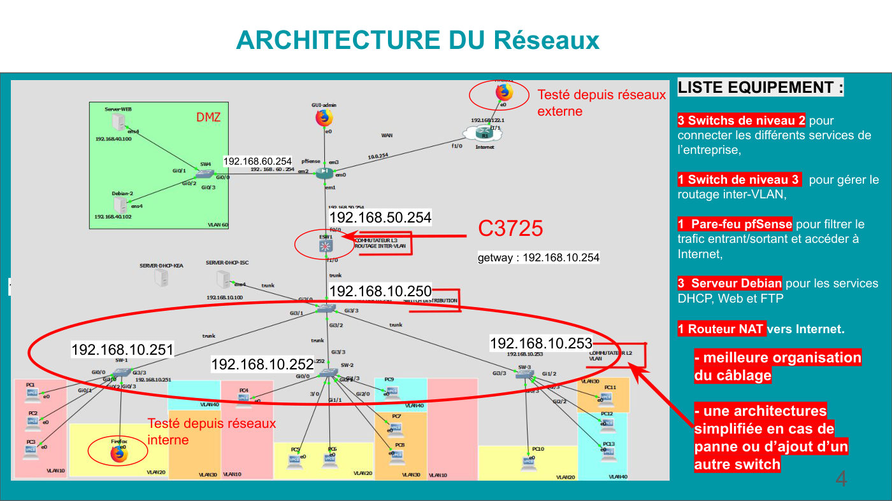
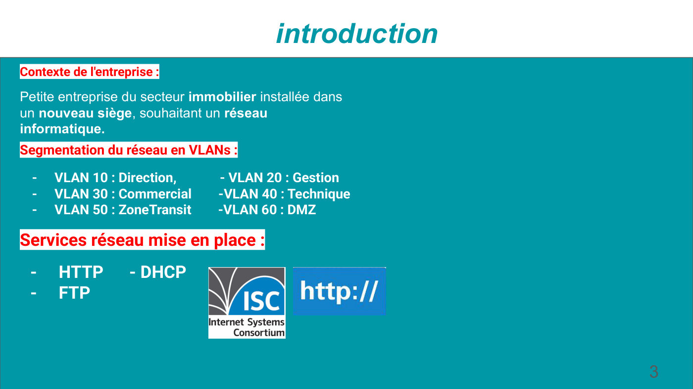
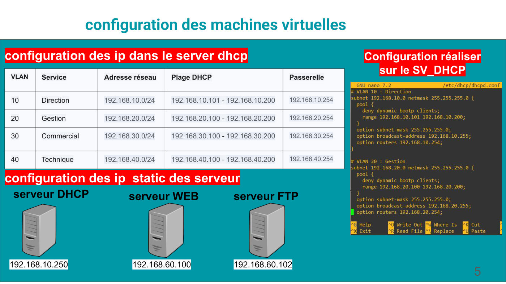
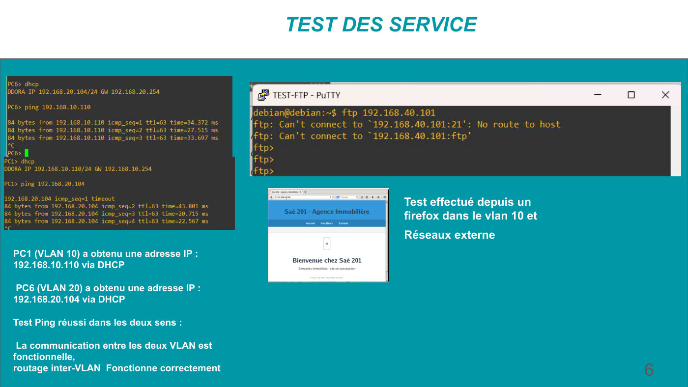

Construire un réseau informatique pour une petite structure
Concevoir, déployer et tester de bout en bout le réseau du nouveau siège d'une agence immobilière, en solo.
Équipe : Projet individuel · Réalisé par Imane ABDOU

Contexte et objectif
Contexte
Une petite entreprise du secteur immobilier s'installe dans un nouveau siège et a besoin d'un réseau informatique complet, organisé par service.
Objectif
Segmenter le réseau, assurer la communication entre services, filtrer les accès Internet et fournir les services réseau essentiels (adressage automatique, site Web, partage de fichiers).
Ma mission
Mon rôle
J'ai réalisé ce projet seule, de la conception aux tests :
- Conception de l'architecture et du plan d'adressage par VLAN
- Configuration des commutateurs, du routage inter-VLAN et du pare-feu pfSense
- Installation des serveurs Debian (DHCP, Web, FTP) et des adresses statiques
- Tests de fonctionnement depuis le réseau interne et externe, puis présentation
Travaux réalisés
Analyse du besoin
Découpage en VLANs : 10 Direction, 20 Gestion, 30 Commercial, 40 Technique, 50 Zone de transit et 60 DMZ.
Architecture
3 switchs de niveau 2 pour les services, 1 switch de niveau 3 pour le routage inter-VLAN, un pare-feu pfSense et un routeur NAT (C3725) vers Internet.
Services réseau
Serveur DHCP (192.168.10.250) avec une plage par VLAN, serveurs Web (192.168.60.100) et FTP (192.168.60.102) placés en DMZ.
Tests
Attribution DHCP vérifiée, ping inter-VLAN dans les deux sens et accès au site Web depuis un poste interne et depuis le réseau externe.
Outils et technologies
Illustrations du projet
Images extraites du rapport. Cliquez pour agrandir.



Difficultés et solutions
Résultats obtenus
- PC1 (VLAN 10) obtient 192.168.10.110 et PC6 (VLAN 20) 192.168.20.104 par DHCP
- Ping réussi dans les deux sens : le routage inter-VLAN fonctionne
- Site Web accessible depuis le VLAN 10 et depuis le réseau externe
Compétences développées
Compétences
- Conception d'une architecture LAN segmentée
- Plan d'adressage IP et VLAN
- Sécurisation périmétrique (pare-feu, DMZ)
- Déploiement de services réseau sous Linux
- Validation par des tests
Ce que ce projet m'a apporté
Mener un réseau complet seule m'a donné une vision globale : chaque choix d'architecture a un impact direct sur la sécurité, la maintenance et l'évolution.
Envie d'aller plus loin ?
Le document complet détaille toutes les configurations, mesures et analyses.